10 Bivariate Data
Given some data
first inspect it, as in Part I.
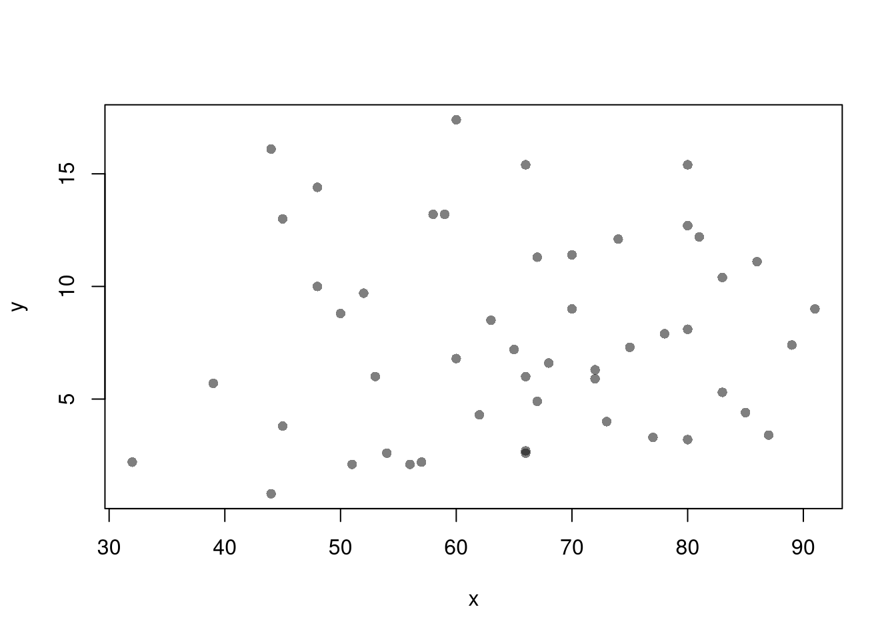
10.1 Linear Correlation
To quantitatively describe the relationship between \(Y\) and \(X\), you can compute the covariance: \[ \widehat{Cov}(X,Y) = \sum_{i} [X_i - \bar{x}] [Y_i - \bar{y}] \]
## y x
## y 18.970465 4.386204
## x 4.386204 209.518776Note that \(\widehat{Cov}(X,X)=\widehat{Var}(X)\). For ease of interpretation, we rescale this statistic to always lay between \(-1\) and \(1\) \[ \widehat{Cor}(X,Y) = \frac{\widehat{Cov}(X,Y) }{ \sqrt{\widehat{Cov}(X,X)} \sqrt{\widehat{Cov}(Y,Y)}} \]
## y x
## y 1.00000000 0.06957262
## x 0.06957262 1.0000000010.2 Simple Linear Regression
Simple Linear Regression refers to fitting a linear model to bivariate data. Specifically, the model is \[ y_i=\beta_{0}+\beta_{1} x_i+\epsilon_{i} \] and our objective function is \[ min_{\beta_{0}, \beta_{1}} \sum_{i=1}^{N} \left( \epsilon_{i} \right)^2 = min_{\beta_{0}, \beta_{1}} \sum_{i=1} \left( y_i - [\beta_{0}+\beta_{1} x_i] \right). \] Minimizing the sum of squared errors yields parameter estimates \[ \hat{\beta_{0}}=\bar{y}-\hat{\beta_{1}}\bar{x} = \widehat{\mathbb{E}}[Y] - \hat{\beta_{1}} \widehat{\mathbb{E}}[X] \\ \hat{\beta_{1}}=\frac{\sum_{i}^{}(x_i-\bar{x})(y_i-\bar{y})}{\sum_{i}^{}(x_i-\bar{x})^2} = \frac{\widehat{Cov}[X,Y]}{\widehat{Var}[X]} \] and predictions \[ \hat{y}_i=\hat{\beta_{0}}+\hat{\beta}x_i\\ \hat{\epsilon}_i=y_i-\hat{y}_i \]
##
## Call:
## lm(formula = y ~ x, data = xy)
##
## Coefficients:
## (Intercept) x
## 6.41594 0.02093## (Intercept) x
## 6.41594246 0.02093466To qualitatively analyze the ‘’Goodness of fit’’ of our model, we plot our predictions.
# Plot Data and Predictions
library(plotly)
xy$ID <- rownames(USArrests)
xy$pred <- predict(reg)
xy$resid <- resid(reg)
fig <- plotly::plot_ly(
xy, x=~x, y=~y,
mode='markers',
type='scatter',
hoverinfo='text',
marker=list(color=grey(0,.25), size=10),
text=~paste('<b>', ID, '</b>',
'<br>Urban :', x,
'<br>Murder :', y,
'<br>Predicted Murder :', round(pred,2),
'<br>Residual :', round(resid,2)))
# Add Legend
fig <- plotly::layout(fig,
showlegend=F,
title='Crime and Urbanization in America 1975',
xaxis = list(title='Percent of People in an Urban Area'),
yaxis = list(title='Homicide Arrests per 100,000 People'))
# Plot Model Predictions
add_trace(fig, x=~x, y=~pred,
inherit=F, hoverinfo='none',
mode='lines+markers', type='scatter',
color=I('black'),
line=list(width=1/2),
marker=list(symbol=134, size=5))To quantitatively analyze Goodness of Fit, we can intuitively compute the linear correlation between the predictions and the data \[ R = Cor( \hat{y}_i, y) \] With linear models, we typically compute \(R^2\), known as the “coefficient of determination”, using the sums of squared errors (Total, Explained, and Residual) \[ \underbrace{\sum_{i}(y_i-\bar{y})^2}_\text{TSS}=\underbrace{\sum_{i}(\hat{y}_i-\bar{y})^2}_\text{ESS}+\underbrace{\sum_{i}\hat{\epsilon_{i}}^2}_\text{RSS}\\ R^2 = \frac{ESS}{TSS}=1-\frac{RSS}{TSS} \]
# Manually Compute R2
Ehat <- resid(reg)
RSS <- sum(Ehat^2)
Y <- xy$y
TSS <- sum((Y-mean(Y))^2)
R2 <- 1 - RSS/TSS
R2## [1] 0.00484035## [1] 0.00484035## [1] 0.0048403510.3 Variability Estimates
A regression coefficient is a statistic. And, just like all statistics, we can calculate
- standard deviation: variability within a single sample.
- standard error: variability across different samples.
- confidence interval: range your statistic varies across different samples.
Note that values reported by your computer do not necessarily satisfy this definition. To calculate these statistics, we will estimate variability using data-driven methods. (For some theoretical background, see, e.g., https://www.sagepub.com/sites/default/files/upm-binaries/21122_Chapter_21.pdf.)
We first consider the simplest, the jackknife. In this procedure, we loop through each row of the dataset. And, in each iteration of the loop, we drop that observation from the dataset and reestimate the statistic of interest. We then calculate the standard deviation of the statistic across all ``subsamples’’.
# Jackknife Standard Errors for OLS Coefficient
jack_regs <- lapply(1:nrow(xy), function(i){
xy_i <- xy[-i,]
reg_i <- lm(y~x, dat=xy_i)
})
jack_coefs <- sapply(jack_regs, coef)['x',]
jack_se <- sd(jack_coefs)
# classic_se <- sqrt(diag(vcov(reg)))[['x']]
# Jackknife Sampling Distribution
hist(jack_coefs, breaks=25,
main=paste0('SE est. = ', round(jack_se,4)),
font.main=1, border=NA,
xlab=expression(beta[-i]))
# Original Estimate
abline(v=coef(reg)['x'], lwd=2)
# Jackknife Confidence Intervals
jack_ci_percentile <- quantile(jack_coefs, probs=c(.025,.975))
abline(v=jack_ci_percentile, lty=2)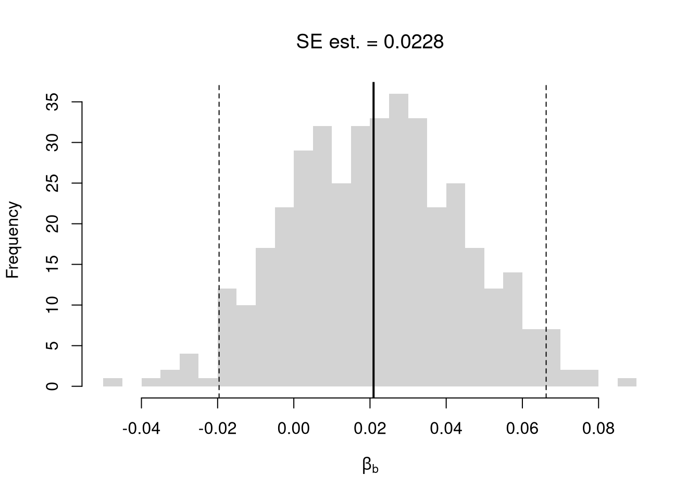
# Plot Normal Approximation
# jack_ci_normal <- jack_mean+c(-1.96, +1.96)*jack_se
# abline(v=jack_ci_normal, col="red", lty=3)There are several resampling techniques. The other main one is the bootstrap, which resamples with replacement for an arbitrary number of iterations. When bootstrapping a dataset with \(n\) observations, you randomly resample all \(n\) rows in your data set \(B\) times. Random subsampling is one of many hybrid approaches that tries to combine the best of both worlds.
| Sample Size per Iteration | Number of Iterations | Resample | |
|---|---|---|---|
| Bootstrap | \(n\) | \(B\) | With Replacement |
| Jackknife | \(n-1\) | \(n\) | Without Replacement |
| Random Subsample | \(m < n\) | \(B\) | Without Replacement |
# Bootstrap
boot_regs <- lapply(1:399, function(b){
b_id <- sample( nrow(xy), replace=T)
xy_b <- xy[b_id,]
reg_b <- lm(y~x, dat=xy_b)
})
boot_coefs <- sapply(boot_regs, coef)['x',]
boot_se <- sd(boot_coefs)
hist(boot_coefs, breaks=25,
main=paste0('SE est. = ', round(boot_se,4)),
font.main=1, border=NA,
xlab=expression(beta[b]))
boot_ci_percentile <- quantile(boot_coefs, probs=c(.025,.975))
abline(v=boot_ci_percentile, lty=2)
abline(v=coef(reg)['x'], lwd=2)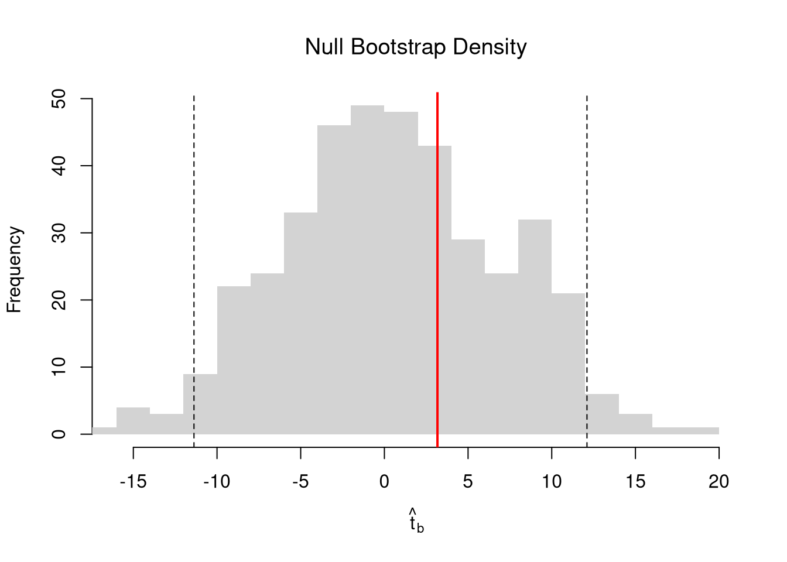
# Random Subsamples
rs_regs <- lapply(1:399, function(b){
b_id <- sample( nrow(xy), nrow(xy)-10, replace=F)
xy_b <- xy[b_id,]
reg_b <- lm(y~x, dat=xy_b)
})
rs_coefs <- sapply(rs_regs, coef)['x',]
rs_se <- sd(rs_coefs)
hist(rs_coefs, breaks=25,
main=paste0('SE est. = ', round(rs_se,4)),
font.main=1, border=NA,
xlab=expression(beta[b]))
abline(v=coef(reg)['x'], lwd=2)
rs_ci_percentile <- quantile(rs_coefs, probs=c(.025,.975))
abline(v=rs_ci_percentile, lty=2)We can also bootstrap other statistics, such as a t-statistic or \(R^2\). We do such things to test a null hypothesis, which is often ``no relationship’’. We are rarely interested in computing standard errors and conducting hypothesis tests for two variables. However, we work through the ideas in the two-variable case to better understand the multi-variable case.
10.4 Hypothesis Tests
Invert a CI. One main way to conduct hypothesis tests is to examine whether a confidence interval contains a hypothesized value. Does the slope coefficient equal \(0\)? For reasons we won’t go into in this class, we typically normalize the coefficient by its standard error: \[ \hat{t} = \frac{\hat{\beta}}{\hat{\sigma}_{\hat{\beta}}} \]
tvalue <- coef(reg)['x']/jack_se
jack_t <- sapply(jack_regs, function(reg_b){
# Data
xy_b <- reg_b$model
# Coefficient
beta_b <- coef(reg_b)[['x']]
t_hat_b <- beta_b/jack_se
return(t_hat_b)
})
hist(jack_t, breaks=25,
main='Jackknife t Density',
font.main=1, border=NA,
xlab=expression(hat(t)[b]),
xlim=range(c(0, jack_t)) )
abline(v=quantile(jack_t, probs=c(.025,.975)), lty=2)
abline(v=0, col="red", lwd=2)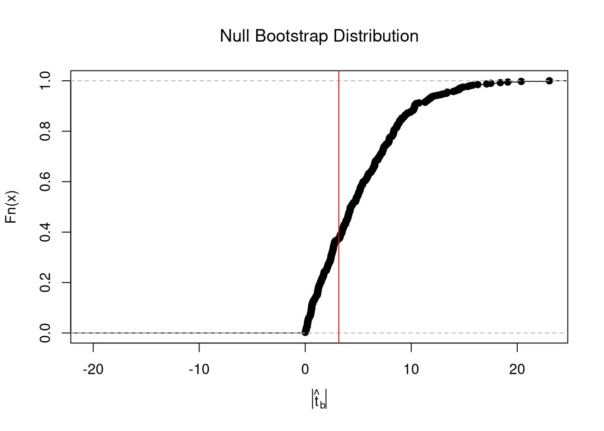
Impose the Null. We can also compute a null distribution. We focus on the simplest: bootstrap simulations that each impose the null hypothesis and re-estimate the statistic of interest. Specifically, we compute the distribution of t-values on data with randomly reshuffled outcomes (imposing the null), and compare how extreme the observed value is.
# Null Distribution for Beta
boot_t0 <- sapply( 1:399, function(b){
xy_b <- xy
xy_b$y <- sample( xy_b$y, replace=T)
reg_b <- lm(y~x, dat=xy_b)
beta_b <- coef(reg_b)[['x']]
t_hat_b <- beta_b/jack_se
return(t_hat_b)
})
# Null Bootstrap Distribution
boot_ci_percentile0 <- quantile(boot_t0, probs=c(.025,.975))
hist(boot_t0, breaks=25,
main='Null Bootstrap Density',
font.main=1, border=NA,
xlab=expression(hat(t)[b]),
xlim=range(boot_t0))
abline(v=boot_ci_percentile0, lty=2)
abline(v=tvalue, col="red", lwd=2)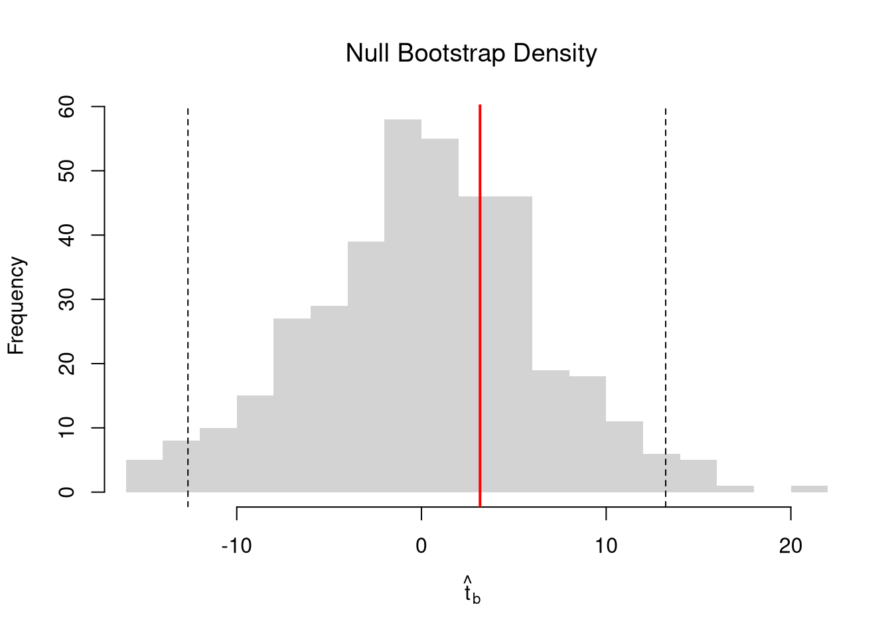
Alternatively, you can impose the null by recentering the sampling distribution around the theoretical value; \[\hat{t} = \frac{\hat{\beta} - \beta_{0} }{\hat{\sigma}_{\hat{\beta}}}.\] Under some assumptions, the null distribution follows a t-distribution. (For more on parametric t-testing based on statistical theory, see https://www.econometrics-with-r.org/4-lrwor.html.)
In any case, we can calculate a p-value: the probability you would see something as extreme as your statistic under the null (assuming your null hypothesis was true). We can always calculate a p-value from an explicit null distribution.
# One Sided Test for P(t > boot_t | Null) = 1 - P(t < boot_t | Null)
That_NullDist1 <- ecdf(boot_t0)
Phat1 <- 1-That_NullDist1(jack_t)
# Two Sided Test for P(t > jack_t or t < -jack_t | Null)
That_NullDist2 <- ecdf(abs(boot_t0))
plot(That_NullDist2, xlim=range(boot_t0, jack_t),
xlab=expression( abs(hat(t)[b]) ),
main='Null Bootstrap Distribution', font.main=1)
abline(v=tvalue, col='red')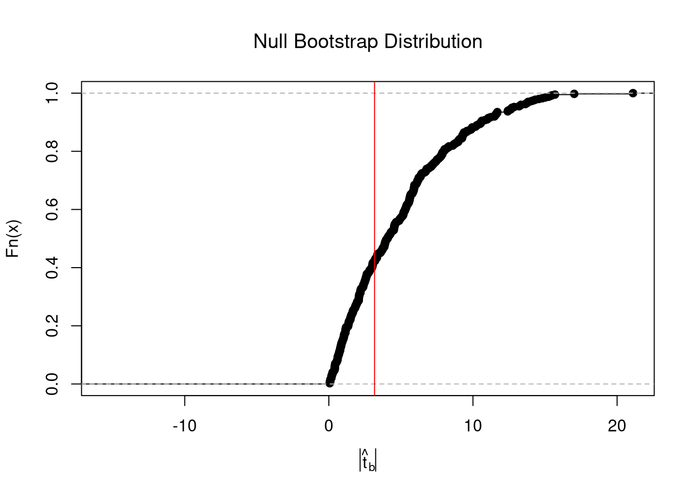
## [1] 0.578947410.5 Prediction Intervals
In addition to confidence intervals, we can also compute a prediction interval which estimates the range of variability across different samples for the outcomes. These intervals also take into account the residuals— the variability of individuals around the mean.
# Bootstrap Prediction Interval
boot_resids <- lapply(boot_regs, function(reg_b){
e_b <- resid(reg_b)
x_b <- reg_b$model$x
res_b <- cbind(e_b, x_b)
})
boot_resids <- as.data.frame(do.call(rbind, boot_resids))
# Homoskedastic
ehat <- quantile(boot_resids$e_b, probs=c(.025, .975))
x <- quantile(xy$x,probs=seq(0,1,by=.1))
boot_pi <- coef(reg)[1] + x*coef(reg)['x']
boot_pi <- cbind(boot_pi + ehat[1], boot_pi + ehat[2])
# Plot Bootstrap PI
plot(y~x, dat=xy, pch=16, main='Prediction Intervals',
ylim=c(-5,20), font.main=1)
polygon( c(x, rev(x)), c(boot_pi[,1], rev(boot_pi[,2])),
col=grey(0,.2), border=NA)
# Parametric PI (For Comparison)
pi <- predict(reg, interval='prediction', newdata=data.frame(x))
lines( x, pi[,'lwr'], lty=2)
lines( x, pi[,'upr'], lty=2)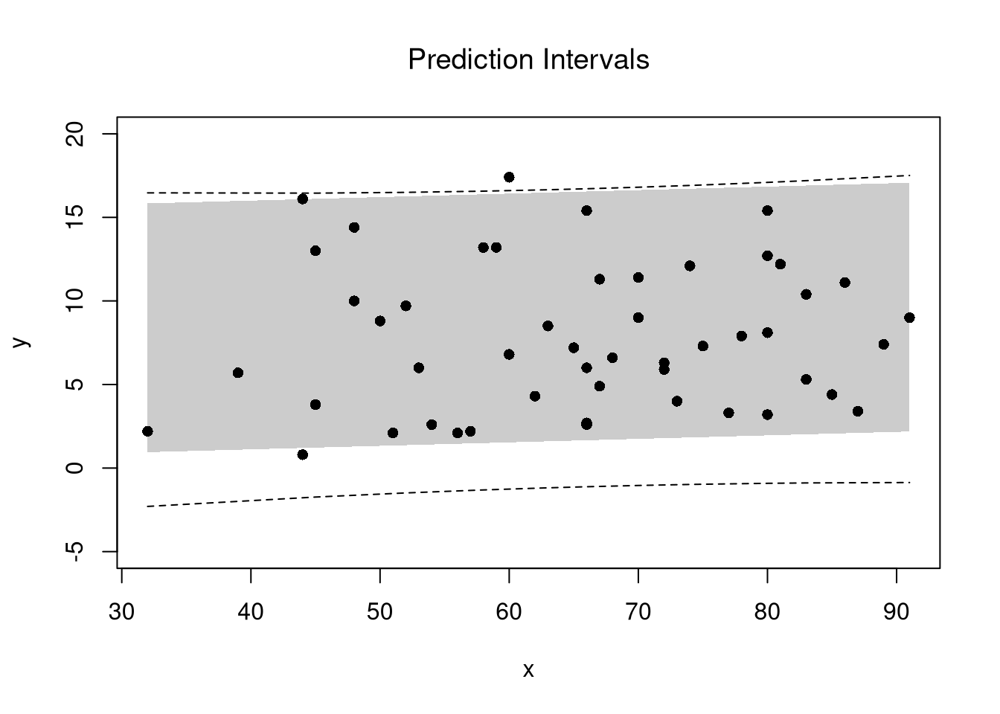
For a nice overview of different types of intervals, see https://www.jstor.org/stable/2685212. For an in-depth view, see “Statistical Intervals: A Guide for Practitioners and Researchers” or “Statistical Tolerance Regions: Theory, Applications, and Computation”. See https://robjhyndman.com/hyndsight/intervals/ for constructing intervals for future observations in a time-series context. See Davison and Hinkley, chapters 5 and 6 (also Efron and Tibshirani, or Wehrens et al.)
10.6 Locally Linear
It is generally safe to assume that you could be analyzing data with nonlinear relationships. Here, our model can be represented as \[\begin{eqnarray} y_{i} = m(x_{i}) + e_{i}, \end{eqnarray}\] with \(m\) being some unknown but smooth function. In such cases, linear regressions can still be useful.
The simplest case is segmented/piecewise regression
# Globally Linear
reg <- lm(y~x, data=xy)
# Diagnose Fit
#plot( fitted(reg), resid(reg), pch=16, col=grey(0,.5))
#plot( xy$x, resid(reg), pch=16, col=grey(0,.5))
# Linear in 2 Pieces (subsets)
xcut2 <- cut(xy$x,2)
xy_list2 <- split(xy, xcut2)
regs2 <- lapply(xy_list2, function(xy_s){
lm(y~x, data=xy_s)
})
sapply(regs2, coef)## (31.9,61.5] (61.5,91.1]
## (Intercept) -0.2836303 4.15337509
## x 0.1628157 0.04760783# Linear in 3 Pieces (subsets or bins)
xcut3 <- cut(xy$x, seq(32,92,by=20)) # Finer Bins
xy_list3 <- split(xy, xcut3)
regs3 <- lapply(xy_list3, function(xy_s){
lm(y~x, data=xy_s)
})
sapply(regs3, coef)## (32,52] (52,72] (72,92]
## (Intercept) 4.60313390 2.36291848 8.653829140
## x 0.08233618 0.08132841 -0.007174454Compare Predictions
pred1 <- data.frame(yhat=predict(reg), x=reg$model$x)
pred1 <- pred1[order(pred1$x),]
pred2 <- lapply(regs2, function(reg){
data.frame(yhat=predict(reg), x=reg$model$x)
})
pred2 <- do.call(rbind,pred2)
pred2 <- pred2[order(pred2$x),]
pred3 <- lapply(regs3, function(reg){
data.frame(yhat=predict(reg), x=reg$model$x)
})
pred3 <- do.call(rbind,pred3)
pred3 <- pred3[order(pred3$x),]
# Compare Predictions
plot(y ~ x, pch=16, col=grey(0,.5), dat=xy)
lines(yhat~x, pred1, lwd=2, col=2)
lines(yhat~x, pred2, lwd=2, col=4)
lines(yhat~x, pred3, lwd=2, col=3)
legend('topleft',
legend=c('Globally Linear', 'Peicewise Linear (2)','Peicewise Linear (3)'),
lty=1, col=c(2,4,3), cex=.8)
A less simple case is a local linear regression which conducts a linear regression for each data point using a subsample of data around it.
# ``Naive" Smoother
pred_fun <- function(x0, h, xy){
# Assign equal weight to observations within h distance to x0
# 0 weight for all other observations
ki <- dunif(xy$x, x0-h, x0+h)
llls <- lm(y~x, data=xy, weights=ki)
yhat_i <- predict(llls, newdata=data.frame(x=x0))
}
X0 <- sort(unique(xy$x))
pred_lo1 <- sapply(X0, pred_fun, h=2, xy=xy)
pred_lo2 <- sapply(X0, pred_fun, h=20, xy=xy)
plot(y~x, pch=16, data=xy, col=grey(0,.5),
ylab='Murder Rate', xlab='Population Density')
cols <- c(rgb(.8,0,0,.5), rgb(0,0,.8,.5))
lines(X0, pred_lo1, col=cols[1], lwd=1, type='o')
lines(X0, pred_lo2, col=cols[2], lwd=1, type='o')
legend('topleft', title='Locally Linear',
legend=c('h=2 ', 'h=20'),
lty=1, col=cols, cex=.8)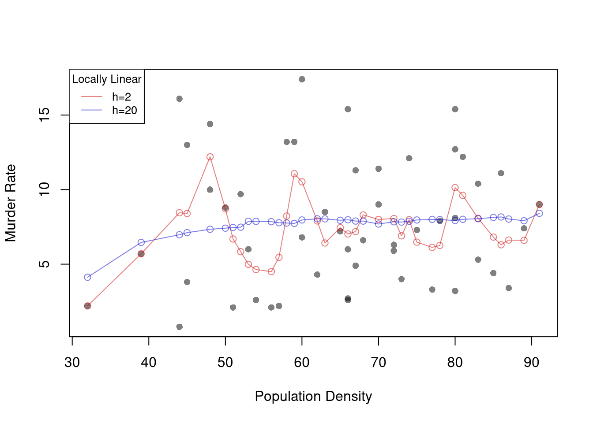 Note that there are more complex versions of local linear regressions (see https://shinyserv.es/shiny/kreg/ for a nice illustration.) An even more complex (and more powerful) version is loess, which uses adaptive bandwidths in order to have a similar number of data points in each subsample (especially useful when \(X\) is not uniform.)
# Adaptive-width subsamples with non-uniform weights
xy0 <- xy[order(xy$x),]
plot(y~x, pch=16, col=grey(0,.5), dat=xy0)
reg_lo4 <- loess(y~x, data=xy0, span=.4)
reg_lo8 <- loess(y~x, data=xy0, span=.8)
cols <- hcl.colors(3,alpha=.75)[-3]
lines(xy0$x, predict(reg_lo4),
col=cols[1], type='o', pch=2)
lines(xy0$x, predict(reg_lo8),
col=cols[2], type='o', pch=2)
legend('topleft', title='Loess',
legend=c('span=.4 ', 'span=.8'),
lty=1, col=cols, cex=.8)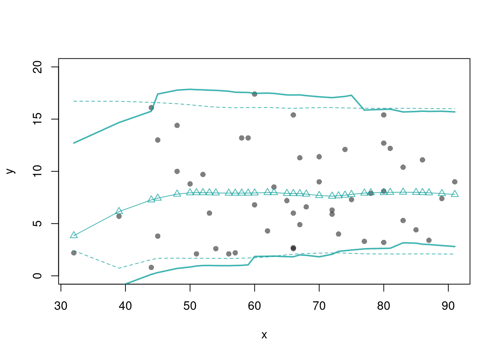
The smoothed predicted values estimate the local means. So we can also construct confidence bands
# Loess
xy0 <- xy[order(xy$x),]
X0 <- unique(xy0$x)
reg_lo <- loess(y~x, data=xy0, span=.8)
# Jackknife CI
jack_lo <- sapply(1:nrow(xy), function(i){
xy_i <- xy[-i,]
reg_i <- loess(y~x, dat=xy_i, span=.8)
predict(reg_i, newdata=data.frame(x=X0))
})
jack_cb <- apply(jack_lo,1, quantile,
probs=c(.025,.975), na.rm=T)
# Plot
plot(y~x, pch=16, col=grey(0,.5), dat=xy0)
preds_lo <- predict(reg_lo, newdata=data.frame(x=X0))
lines(X0, preds_lo,
col=hcl.colors(3,alpha=.75)[2],
type='o', pch=2)
# Plot CI
polygon(
c(X0, rev(X0)),
c(jack_cb[1,], rev(jack_cb[2,])),
col=hcl.colors(3,alpha=.25)[2],
border=NA)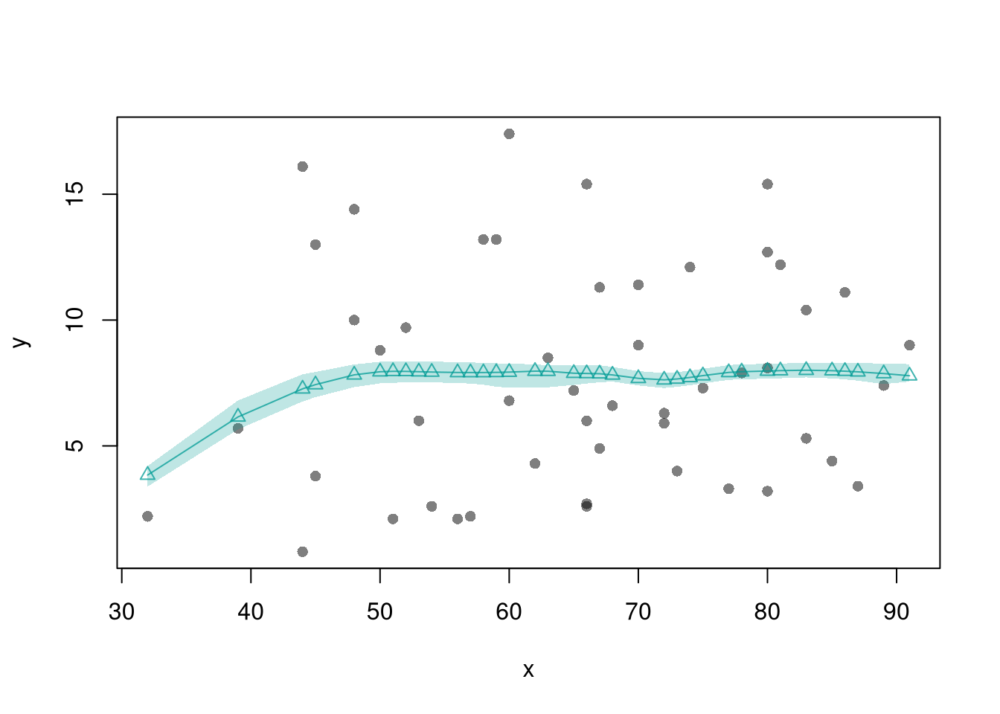
You can also construct prediction bands, which estimate the variability of new data rather than a statistic (a range for \(y_{i}(x)\) rather than for \(m(x)\)).
plot(y~x, pch=16, col=grey(0,.5),
dat=xy0, ylim=c(0, 20))
lines(X0, preds_lo,
col=hcl.colors(3,alpha=.75)[2],
type='o', pch=2)
# Estimate Residuals CI at design points
res_lo <- sapply(1:nrow(xy), function(i){
y_i <- xy[i,'y']
preds_i <- jack_lo[,i]
resids_i <- y_i - preds_i
})
res_cb <- apply(res_lo, 1, quantile,
probs=c(.025,.975), na.rm=T)
# Plot
lines( X0, preds_lo +res_cb[1,],
col=hcl.colors(3,alpha=.75)[2], lt=2)
lines( X0, preds_lo +res_cb[2,],
col=hcl.colors(3,alpha=.75)[2], lty=2)
# Smooth estimates
res_lo <- lapply(1:nrow(xy), function(i){
y_i <- xy[i,'y']
x_i <- xy[i,'x']
preds_i <- jack_lo[,i]
resids_i <- y_i - preds_i
cbind(e=resids_i, x=x_i)
})
res_lo <- as.data.frame(do.call(rbind, res_lo))
res_fun <- function(x0, h, res_lo){
# Assign equal weight to observations within h distance to x0
# 0 weight for all other observations
ki <- dunif(res_lo$x, x0-h, x0+h)
ei <- res_lo[ki!=0,'e']
res_i <- quantile(ei, probs=c(.025,.975), na.rm=T)
}
X0 <- sort(unique(xy$x))
res_lo2 <- sapply(X0, res_fun, h=15, res_lo=res_lo)
lines( X0, preds_lo +res_lo2[1,],
col=hcl.colors(3,alpha=.75)[2], lty=1, lwd=2)
lines( X0, preds_lo +res_lo2[2,],
col=hcl.colors(3,alpha=.75)[2], lty=1, lwd=2)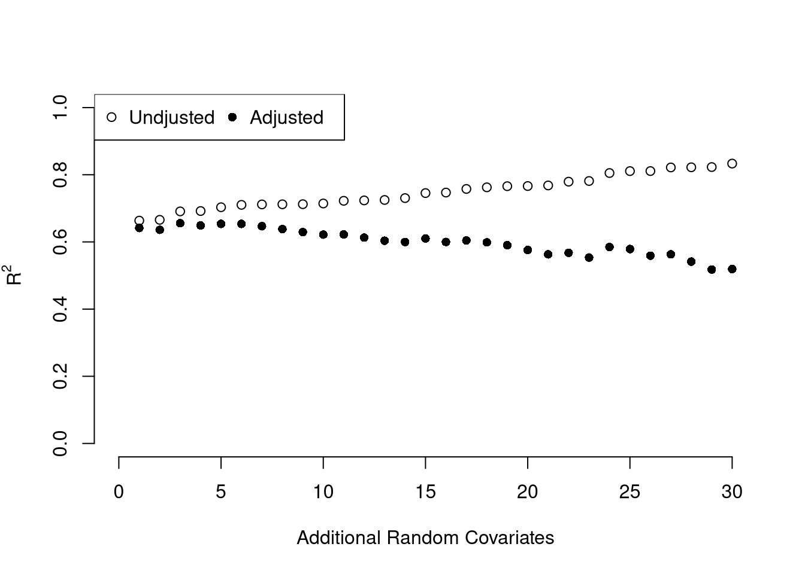